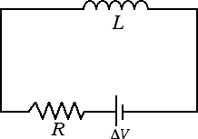

Correnti indotte
Autoinduzione
Consideriamo il circuito elettrico in figura, dove un generatore è collegato a una induttanza L e a una resistenza R.

Se inizialmente nel circuito passa una corrente i1 allora il flusso del campo magnetico concatenato con il solenoide è dato da ΦB1 = L · i1. Supponiamo che la resistenza R inserita nel circuito sia una resistenza variabile. Se variamo R varierà la corrente i = ΔV / R. Se il nuovo valore della corrente nel circuito è i2, il flusso finale del campo magnetico è dato da ΦB2 = L · i2. La variazione del flusso è pertanto ΔΦB = L · i2 - L · i1 = L · Δi.
Si noti che, a differenza di quanto avveniva negli esperimenti di Faraday in cui la variazione del flusso del campo magnetico era dovuta a un magnete esterno al circuito, qui è il circuito stesso a indurre una variazione del flusso del campo magnetico. Per questa ragione il fenomeno fisico in esame prende il nome di autoinduzione. Dalla legge di Faraday-Neumann-Lenz abbiamo che la differenza di potenziale autoindotta è ΔVi = - L · Δi / Δt, dove ancora una volta il segno - è espressione della legge di Lenz: la corrente indotta si oppone alla causa che l'ha generata.
Quali sono le conseguenze dell'autoinduzione? Se noi consideriamo un circuito RL come quello della figura avremo che, chiudendo il circuito, la corrente elettrica passa dal valore 0 al valore i = ΔV / R non in maniera istantanea ma in un certo intervallo di tempo. Analogamente quando apriamo il circuito la presenza delle correnti autoindotte fa variare la corrente da i a 0 non in maniera istantanea, ma solo dopo un certo intervallo di tempo.
Concludiamo questa sezione ricordando come in un circuito di tipo RL l'energia fornita dal generatore si divide tra l'energia elettrica della resistenza: Eel = R i2 Δt e l'energia magnetica che rimane immagazzinata nel solenoide. La formula dell'energia immagazzinata in un solenoide di induttanza L percorso da una corrente i è data da Em = 1/2 L i2.